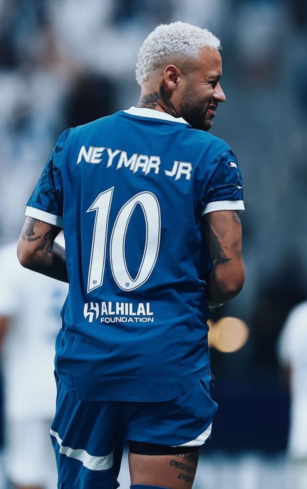
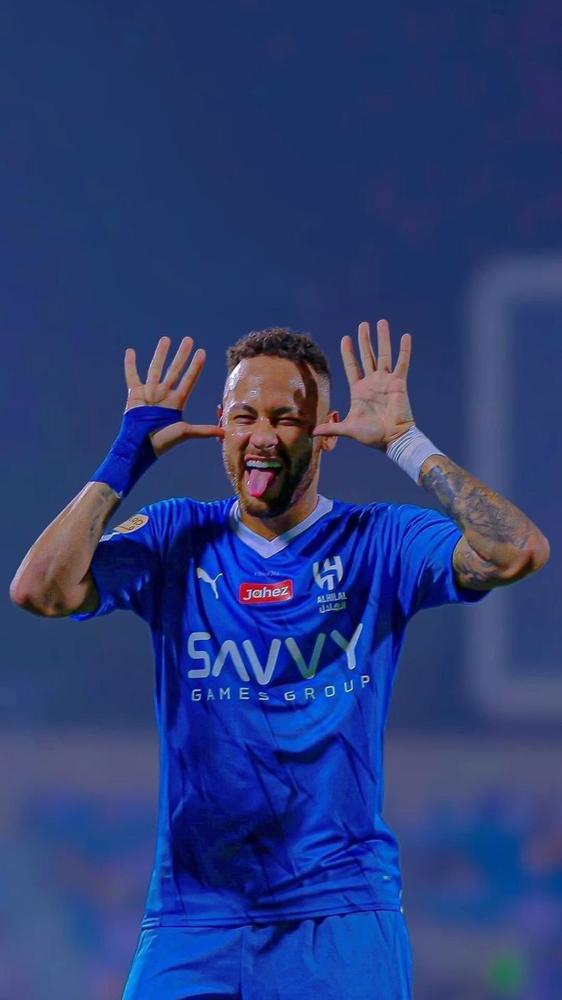
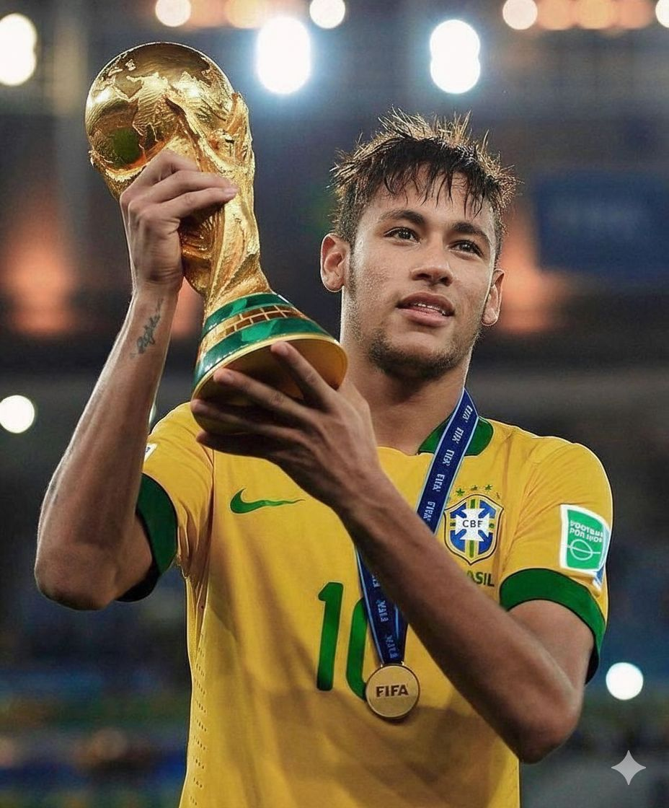
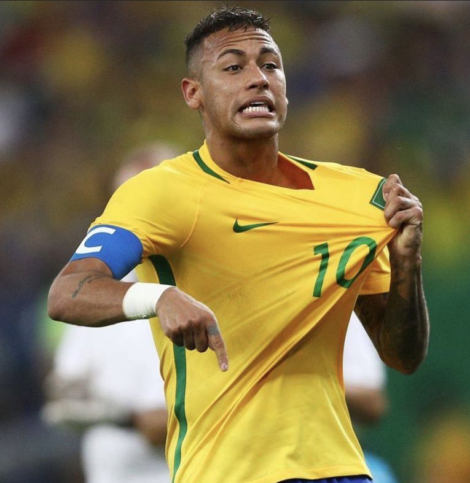
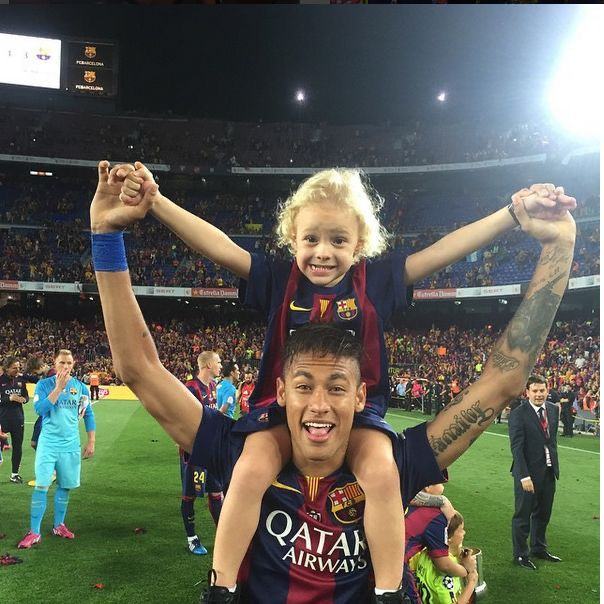
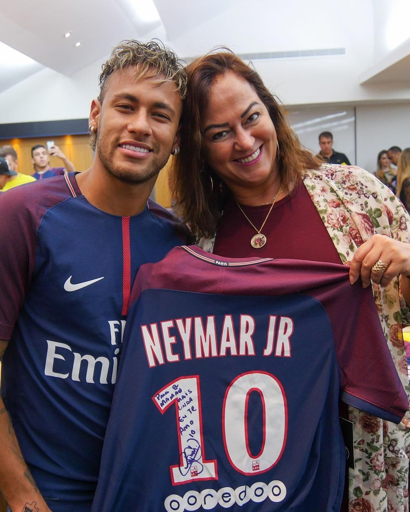
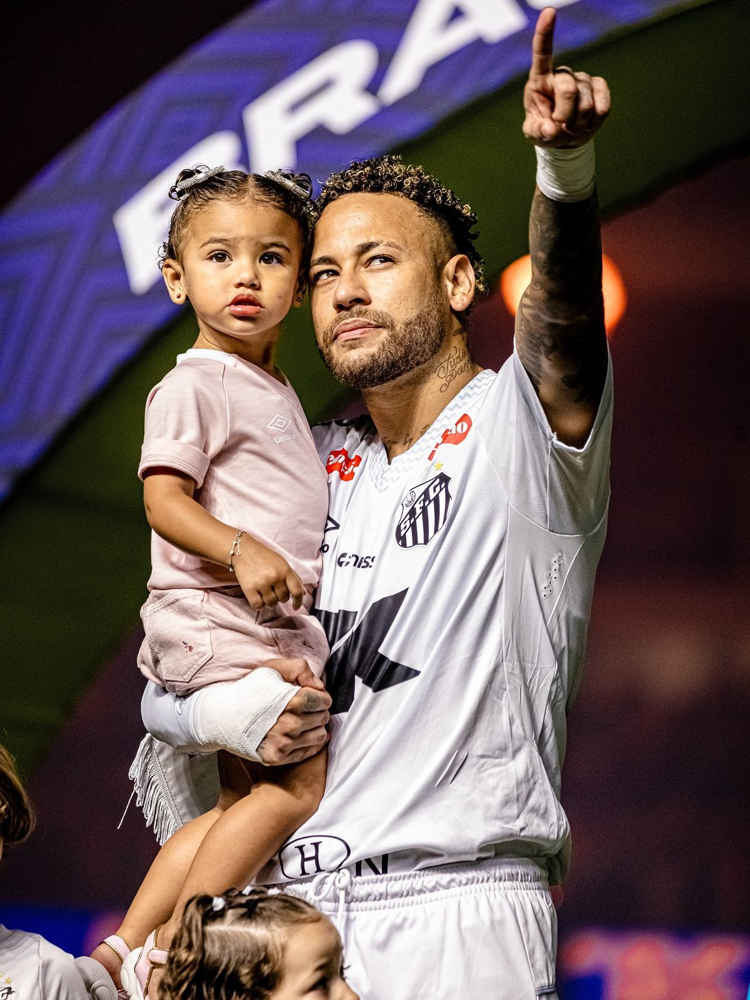
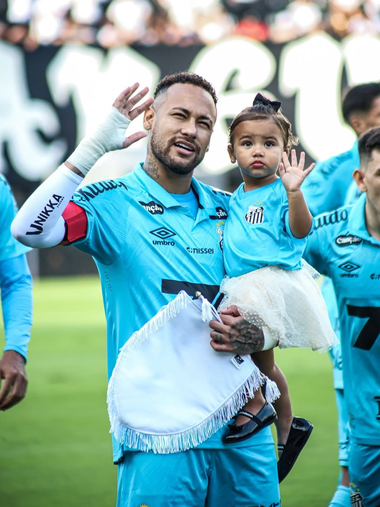

Existem jogadores de futebol, e depois existe Neymar Jr. Tem momentos em que assistir ao Ney jogar é quase uma experiência religiosa — aquele drible desconcertante, aquela rolinha no momento menos esperado, aquele sorriso largo depois de um gol impossível. Eu cresci vendo grandes jogadores, mas posso dizer com absoluta convicção: Neymar Jr. é o melhor jogador brasileiro da era pós-Pelé, e discutir isso é quase uma heresia pra mim.
Sou Kawê Henrique, técnico em desenvolvimento de sistemas, flamenguista roxo e, sim, um fã apaixonado do craque. Este artigo não é um texto neutro de enciclopédia — é uma declaração de amor ao futebol arte personificado num único ser humano. Prepara o coração, porque a história que vou te contar é bonita demais para caber numa linha de timeline.
"Quando o Neymar recebe a bola, o estádio inteiro prende a respiração. Isso é um dom que não se ensina."
A Criança de Mogi das Cruzes que Sonhava Grande

Neymar da Silva Santos Júnior nasceu no dia 5 de fevereiro de 1992, em Mogi das Cruzes, São Paulo — uma cidade do interior paulista que talvez nunca imaginasse que estava dando ao mundo um dos maiores talentos que o futebol já viu. Filho de Neymar Santos (que todos conhecem como Pai Ney) e Nadine Santos, o pequeno Juninho cresceu num ambiente de dificuldades financeiras reais. Não estou falando de uma pobreza romantizada de documentário — era luta de verdade, contas apertadas, mudanças frequentes, uma infância que poderia ter seguido caminhos muito diferentes.
Mas a bola entrou em campo cedo. Muito cedo. O pai, que foi jogador de futebol amador e tinha aquela paixão genuína pelo esporte, percebeu antes de qualquer técnico que o filho não era apenas talentoso — era diferente. Havia algo naquele menino que não se explica com palavras técnicas. Uma relação com a bola que parecia instintiva, quase sobrenatural. Com seis anos já jogava em escolinhas. Com oito, chamava a atenção de todo mundo em Praia Grande.
Aos 11 anos, o Santos Futebol Clube bateu à porta. E aqui começa uma das histórias mais importantes do futebol moderno: um menino de família simples sendo levado para o centro de treinamento de um dos clubes mais tradicionais do Brasil — o mesmo clube que revelou Pelé. A comparação, inevitável desde cedo, jamais pesou nos ombros dele. Pelo contrário, parecia que Neymar usava essa pressão como combustível.
"Meu pai foi meu primeiro técnico, meu primeiro fã e minha maior inspiração. Tudo que sou, devo a ele."
Santos FC: Onde Nasceu uma Lenda


No dia 7 de março de 2009, um garoto de 17 anos entrou em campo pela primeira vez como profissional. O Santos jogava contra o Oeste pelo Campeonato Paulista. Poucos sabiam o que estavam prestes a ver. Neymar entrou no segundo tempo, e em questões de minutos ficou claro que aquilo não era uma estreia normal. Era uma apresentação. Era um artista mostrando que chegou.
O que se seguiu nos próximos quatro anos foi simplesmente absurdo. Neymar não foi uma revelação gradual — foi uma explosão. Com 17 anos e poucos meses, já era titular absoluto. Com 18, já era o maior nome do futebol brasileiro. Com 19, conquistou a Copa Libertadores da América de 2011 — o torneio mais importante do futebol sul-americano —, liderando um Santos que jogava um futebol de deixar qualquer torcedor boquiaberto.
Dribles sem sentido lógico. Gols de placa. Assistências impossíveis. Neymar não era apenas eficaz — ele era bonito de se ver. Num Brasil que sempre foi apaixonado pelo futebol arte, ele surgiu como o herdeiro de uma tradição que muita gente temia que estivesse se perdendo. Era a continuação de Pelé, Garrincha, Zico, Romário, Ronaldo... mas com a ousadia de uma nova geração que não tem medo de errar.
Nesse período no Santos, Neymar marcou mais de 130 gols pelo clube, conquistou a Copa do Brasil, a Recopa Sul-Americana e dois Campeonatos Paulistas. Foi reconhecido como o melhor jogador do continente por dois anos consecutivos. E enquanto o mundo inteiro batia à sua porta — Real Madrid, Barcelona, Chelsea, Manchester City — ele ficou. Ficou porque amava o Santos. Ficou porque tinha uma história para terminar de escrever ali.
Barcelona: O Trio que Parou o Mundo


Em junho de 2013, o inevitável aconteceu. Neymar assinou com o FC Barcelona por 57,1 milhões de euros — uma transferência que, anos depois, seria alvo de longas batalhas jurídicas, mas que na época foi comemorada com festa por catalães e brasileiros em igual medida. O Camp Nou recebeu seu novo rei com os braços abertos.
Mas o maior presente não era apenas a chegada de Neymar ao Barça. Era o que aconteceria quando ele encontrasse Lionel Messi e Luis Suárez. O famoso trio MSN não foi apenas um time de futebol — foi um fenômeno cultural, um espetáculo de arte que o mundo inteiro parou para assistir. Três jogadores de qualidade absoluta, com estilos completamente diferentes, funcionando em perfeita harmonia. Messi com a genialidade fria, Suárez com a ferocidade predatória, e Neymar com a alegria, a magia e os dribles que desafiavam a física.
Na temporada 2014/2015, o MSN fez história: juntos, marcaram 122 gols em uma única temporada. O Barcelona conquistou La Liga, a Copa do Rei e, o mais importante, a UEFA Champions League. Neymar foi decisivo na final contra a Juventus, marcando um gol e dando uma assistência na vitória por 3 a 1 em Berlim. Com 23 anos, ele tinha na mão o troféu mais cobiçado do futebol europeu.
Neymar no Barça não era apenas um jogador de apoio a Messi — era um protagonista absoluto. Encerrou as quatro temporadas com 105 gols e 76 assistências em 186 jogos. Números de elite, num dos maiores clubes do mundo. E mesmo assim, seu coração pedia mais. Pedia para ser o cara, não apenas um dos caras. Pedia o protagonismo total.
"O MSN foi o melhor ataque que já vi na minha vida. Neymar naquele trio não era coadjuvante — era parte indispensável de algo que só acontece uma vez na história."
PSG: O Recorde de €222 Milhões e a Era Paris

3 de agosto de 2017. O mundo do futebol acordou diferente naquele dia. O Paris Saint-Germain anunciou oficialmente a contratação de Neymar Jr. por 222 milhões de euros — ativando a cláusula de rescisão do Barcelona e reescrevendo para sempre o mercado de transferências. Duzentos e vinte e dois milhões. Um número tão absurdo que muita gente achou que era fake news. Não era.
E por que Paris? Porque Neymar queria ser o melhor, o número 1, o cara que carrega um clube nas costas. Ele queria a responsabilidade total, o protagonismo sem divisão. Em Paris, ele teria exatamente isso — e o mundo ficaria de olho em cada passo seu.

Nos seis anos no PSG, Neymar fez história. Marcou mais de 118 gols e distribuiu mais de 77 assistências em 173 jogos — um rendimento simplesmente espetacular quando estava saudável. O problema foram as lesões. Uma série de contusões graves interromperam o que poderia ter sido ainda mais extraordinário. O tornozelo esquerdo virou um calvário que não tinha fim.
Mesmo assim, ele levou o PSG à final da Champions League de 2020 — a primeira final do clube na história. Em plena pandemia, numa bolha em Lisboa, Neymar jogou de alma, deu tudo que tinha, e só perdeu porque o Bayern de Munique estava num nível diferente naquela noite. Mas chegar lá, levar aquele clube à maior final da sua história, já foi um feito monumental.
Al-Hilal, Lesões e o Retorno ao Lar
Capítulo Árabe


Neymar no Al-Hilal — a Arábia Saudita recebeu o maior nome do futebol mundial com grandiosidade e expectativa
Em agosto de 2023, um novo capítulo — desta vez na Arábia Saudita. Neymar assinou com o Al-Hilal por uma proposta financeira que nenhum humano normal recusaria. O início foi promissor, mas o destino conspirou mais uma vez: uma ruptura do ligamento cruzado anterior do joelho esquerdo em outubro de 2023, durante um jogo pela Seleção Brasileira contra o Uruguai, cortou a temporada de forma brutal. Mais de um ano de recuperação, sofrimento e espera. Mais uma vez, o futebol aguardava pelo retorno do rei.
O Filho Pródigo Volta para Casa

E então chegou o momento mais emocionante de todos. O retorno ao Santos. Em 2025, Neymar voltou para casa — para o clube que o viu nascer, para a torcida que sempre o amou, para a cidade que guarda os melhores capítulos da sua história. Não era mais o menino de 17 anos cheio de futuro. Era um homem de 33 anos, carregado de história, com o peso de cada título, cada lesão e cada lágrima impressos no corpo. Mas com a mesma chama viva no olhar.
"Voltar ao Santos não foi uma despedida — foi um recomeço. O Neymar mostrou que o futebol ainda corre nas suas veias com a mesma intensidade de sempre."
A Camisa Amarela: O Maior Artilheiro da História do Brasil

Se a carreira de clube de Neymar já é monumental, é com a camisa da Seleção Brasileira que sua história ganha uma dimensão ainda maior. Ele estreou pela Seleção principal em 2010, aos 18 anos, e desde então tornou-se o rosto mais reconhecível do futebol brasileiro no mundo. Em cada Copa do Mundo, em cada torneio, os holofotes sempre chegavam nele primeiro.
Copa das Confederações 2013

A Copa das Confederações de 2013, disputada em casa, foi um prenúncio magnífico: Neymar liderou um Brasil irreconhecível que venceu a Espanha — então campeã do mundo e da Europa — por 3 a 0 na final do Maracanã. Eleito o melhor jogador e artilheiro do torneio com 4 gols e 1 assistência, o craque mostrou ao mundo inteiro que estava pronto para ser o portador da bandeira amarela.
Copas do Mundo
A Copa do Mundo de 2014 no Brasil ficará para sempre marcada na memória do craque — e não pelas melhores razões. Com o Brasil avançando às semifinais, Neymar sofreu uma fratura na vértebra após uma joelhada criminosa no jogo contra a Colômbia. O desfalque da estrela principal contribuiu decisivamente para o traumático 7 a 1 contra a Alemanha. Ver Neymar chorar de maca, ciente de que não poderia mais ajudar seu país em casa, foi uma das cenas mais tristes que o futebol brasileiro já produziu.
Olimpíadas Rio 2016 — O Ouro que Faltava


Rio 2016 — o pênalti que rendeu ao Brasil o primeiro ouro olímpico na história do futebol masculino
Mas a redenção veio. E veio da melhor forma possível. Nas Olimpíadas do Rio de Janeiro em 2016, Neymar carregou o Brasil nas costas de um jeito que nunca mais será esquecido. Na final contra a Alemanha — ironia do destino —, a partida foi para os pênaltis. Com 70 mil pessoas segurando o coração no Maracanã, ele correu, parou, esperou o goleiro se jogar, e jogou a bola no canto contrário com uma frieza absurda. O Brasil tinha, finalmente, o ouro olímpico no futebol masculino. E Neymar havia entregado.
Em novembro de 2023, durante as eliminatórias para a Copa do Mundo, Neymar marcou seu gol de número 79 pela Seleção Brasileira, superando o eterno Pelé e tornando-se o maior artilheiro da história da seleção brasileira. Um feito que muita gente dizia que nunca aconteceria.
"Superar Pelé é algo que vai além do futebol. É carregar a história de um país nas costas e fazer bonito mesmo assim. O Neymar merecia cada gol desses — ele sangrou pela camisa amarela como poucos."
Instituto Projeto Neymar Jr.: Transformando Vidas em Praia Grande
Quando falamos do Instituto Projeto Neymar Jr., estamos falando de algo que vai muito além do futebol. É simplesmente um dos maiores legados sociais deixados por um atleta brasileiro ainda em atividade — e isso não é exagero de fã, é fato documentado.
Criado por Neymar e sua família em 2014, o instituto é uma organização sem fins lucrativos com um propósito que poderia estar escrito num livro de filosofia: transformar vidas através da educação, do esporte, da cultura e da saúde. Localizado em Praia Grande, no litoral paulista — o mesmo bairro humilde onde o craque cresceu —, o projeto carrega uma essência profunda: devolver para a comunidade tudo aquilo que o futebol proporcionou a ele.
Hoje, o instituto atende mais de 2.700 crianças e adolescentes por turno — filhos de famílias de baixa renda que encontram no espaço não apenas aulas de esportes, mas um ambiente de acolhimento, aprendizado e possibilidade. São atividades de futebol, judô, natação, dança, capoeira, teatro e música. São reforço escolar e acompanhamento pedagógico. São três refeições diárias para crianças que, em muitos casos, dependem disso.
"O Instituto é a prova de que o Neymar entende que o futebol foi apenas o meio — o fim é sempre o ser humano. Isso transforma um ídolo em herói."
Família: A Base Que Sustenta o Craque
Por trás dos gols e dos títulos, existe um ser humano profundamente conectado à sua família. Neymar sempre foi transparente sobre o papel central que os seus têm na vida dele — e isso vai muito além dos momentos bonitos que chegam às redes sociais. É uma história de amor, sacrifício e cumplicidade que nenhum troféu substitui.




Momentos preciosos em família — a base que sempre sustentou o craque nos momentos mais difíceis da carreira
O Pai Neymar, além de ser seu primeiro técnico e incentivador, foi por muitos anos seu empresário e o maior guardião da carreira do filho. A relação entre os dois é um dos pilares mais sólidos da história do craque — uma parceria que resistiu ao escrutínio do mundo inteiro. A irmã Rafaella Santos, adorada pelo irmão e muito popular por direito próprio, é uma presença constante nos momentos mais importantes da vida dele.
Davi Lucca, nascido em 2011 com Carol Dantas, foi o primeiro filho — e desde os primeiros anos, Neymar nunca escondeu o quanto a paternidade transformou sua visão de mundo. Em 2023, nasceu Mavie, sua filha com Amanda Kimberly, que chegou ao mundo cercada de amor e de expectativa. A chegada de cada filho marcou fases novas na maturidade emocional do craque — um homem que amadurece visivelmente a cada ciclo da vida.
Estilo, Personalidade e a Marca Neymar

Dentro ou fora do campo, Neymar sempre foi uma referência incontestável de estilo e autenticidade
Neymar não é apenas um fenômeno esportivo — é uma marca. Uma figura pública que transcende o futebol e habita os mundos da moda, da música, do entretenimento e da cultura pop. Desde jovem, o craque nunca teve medo de ser diferente: os penteados ousados que viraram meme e tendência ao mesmo tempo, as roupas coloridas, o estilo inconfundível de celebrar os gols com uma dança ou um sorriso largo que cobre o rosto inteiro.
Essa autenticidade tem um preço — Neymar foi alvo de críticas constantes por quem achava que ele deveria ser "mais sério", "mais focado", "menos extravagante". Mas é exatamente essa personalidade vibrante e sem filtros que o torna único. O mesmo menino que fazia embaixadinha em Praia Grande com os amigos, agora joga pôquer com celebridades, aparece em desfiles de moda e mantém amizades em todos os círculos sociais imagináveis — sem perder a essência de quem é.
A marca Neymar Jr. — com patrocinadores globais como Nike, Red Bull e Puma em diferentes fases — vale centenas de milhões de dólares. Mas o que não tem preço é a influência cultural que esse homem tem sobre uma geração inteira de crianças que sonharam ser como ele. Que queriam jogar com aquela alegria, aqueles dribles, aquele sorriso. E isso é um legado que nenhum número mensura.
Os Números de Uma Carreira Histórica
Neymar é um dos jogadores com mais gols na história do futebol profissional. Quando se analisa os números com frieza — deixando o debate de lado por um momento — o que se vê é simplesmente esmagador:
A Jornada em Linha do Tempo
5 de fevereiro, em Mogi das Cruzes, São Paulo
Começa a jornada no clube que o revelaria ao mundo
7 de março — 17 anos e uma promessa que virou realidade instantânea
Conquista o maior título do futebol sul-americano pelo Santos
Transferência para a Catalunha e o MSN. Melhor jogador e artilheiro da Copa das Confederações
MSN vence a Juventus — Neymar campeão europeu aos 23 anos
O pênalti decisivo no Maracanã. O Brasil chorou de alegria
A transferência que reescreveu a história do futebol
Leva o clube à primeira final europeia da história
Supera Pelé com 79+ gols. Novo capítulo na Arábia Saudita
O filho pródigo volta para casa — o futebol arte continua
Por Que Neymar É — e Sempre Será — Único
Chego ao fim deste artigo com o coração cheio. Escrever sobre Neymar não é apenas narrar uma carreira esportiva — é mergulhar numa obra de arte que ainda está sendo pintada. Ele é, na minha opinião sem qualquer sombra de dúvida, o melhor jogador brasileiro da era pós-Pelé. E afirmo isso não por fanatismo cego, mas por tudo que os números, as conquistas e os momentos históricos provam.
Claro que houve polêmicas. Claro que houve momentos em que ele decepcionou — as lesões que interromperam sequências brilhantes, as eliminações dolorosas em Copas do Mundo, as críticas à sua vida pessoal. Mas quem de nós sobreviveria intacto ao escrutínio absurdo que esse homem vive desde os 17 anos? Neymar carrega o peso de ser o maior desde que ainda era adolescente — e mesmo assim, levantou-se todas as vezes.
O que separa Neymar de praticamente qualquer outro jogador da sua geração não é apenas a técnica — é a alegria. Em campo, ele parece brincar. Aquele drible impossível não é calculado num laboratório de biomecânica — nasce de uma relação com a bola que começou numa quadra de Mogi das Cruzes, com um menino de chinelo sonhando em ser o maior do mundo. E ele foi. Ele é.
Dentro e fora de campo, Neymar construiu um legado que vai além das estatísticas. O Instituto que transforma a vida de milhares de crianças por ano, a carreira que provou que o futebol brasileiro ainda sabe produzir arte, os gols que fizeram o Brasil inteiro gritar junto — tudo isso forma o mosaico de um ser humano que, independente de qualquer opinião, deixou uma marca indelével na história do esporte.
"Neymar Jr. não é apenas um dos maiores talentos da história do futebol — ele é um dos maiores talentos que a humanidade já produziu dentro de um campo. E isso, nenhuma lesão, nenhuma polêmica e nenhuma crítica vai apagar jamais."